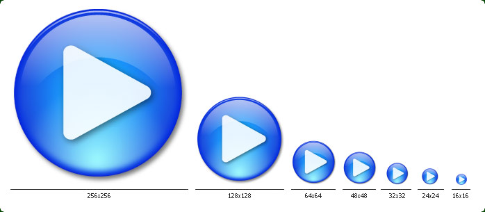
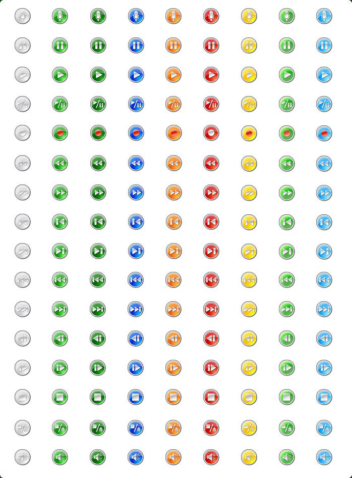
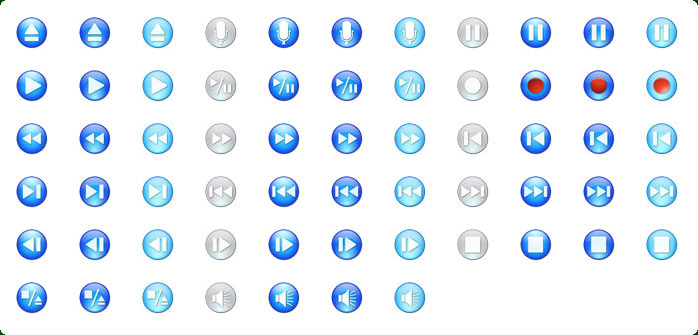
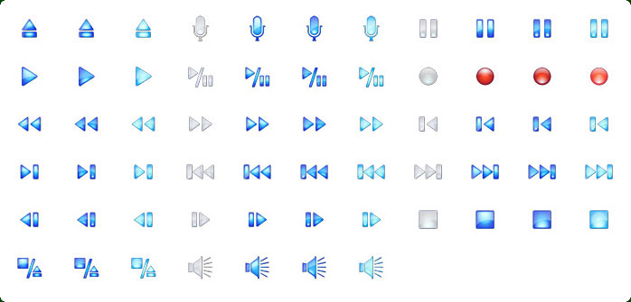
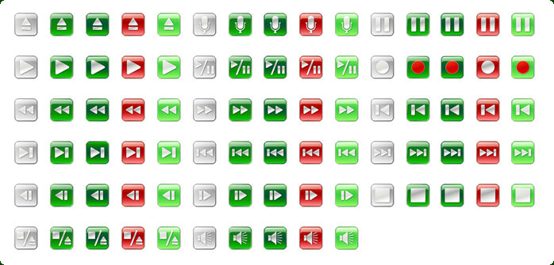
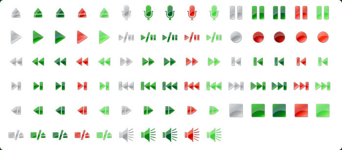

| Style: | Vista Style |
| Series: | Icons for Software and Web |
| Count: | 17 |
| Variations: | 459 |
| Formats: | .PNG, .ICO on Request |
| Colors: | TrueColor + Alpha |
| Sizes: | 16x16, 24x24, 32x32, 48x48, 64x64, 128x128, 256x256 |
| Price: | 40 USD |
Icons-Land presents the most qualitative set of icons - Vista Style Play/Stop/Pause Icon Set. The images included into the set are represented in different variations of colors (green, blue, red, yellow, magenta, grey) and different variations of backgrounds (circle with border, circle without border, box, without background).
This set of ready-made icons represents 17 objects of various video/audio controller buttons such as Play, Stop, Pause, Play/Pause, Stop/Eject, Eject, Record, Scan Back, Scan Forward, Seek Back, Seek Forward, Skip Back, Skip Forward, Step Back, Step Forward, Microphone, Volume. Every icon is offered in 27 variations, what amounts to 459 icons. Each button icon is pictured in Windows Vista Style.
Icons-Land Vista Style Play/Stop/Pause Icon Set contains the preceding images in 7 sizes: 16x16, 24x24, 32x32, 48x48, 64x64, 128x128, 256x256. All icons are crafted in .PNG format (also the .ICO format is available if necessarily). The 16x16 and 256x256 sizes are specific for Vista style, because being accordingly the smallest and the biggest sizes, they are the most problematic. But our icons are worked out in details and that is why look great even in such sizes.
Mostly used are Play, Stop and Pause buttons. Everyone dealt with the recorder. Even people who are not experts in various machineries know that they should press button Play to start the record, then press Pause to delay it and at last Stop to finish the record.
Vista Style Play/Stop/Pause Icon Set can be widely used in applications for your PC or on mobile devices, on various websites, presentations, in Video and Audio industries. They can be implemented in the following applications: Video Recorder, Sound Recorder, Voice Recorder, Voice Recognition, Video Player, Sound Player, MP3 Player, MIDI Player, Animation Player, Animation Designer, 3D Designer, 3D Animation Viewer, etc.
Play, Stop, Pause, Play/Pause, Stop/Eject, Eject, Record, Scan Back, Scan Forward, Seek Back, Seek Forward, Skip Back, Skip Forward, Step Back, Step Forward, Microphone, Volume
Preview of one icon in all sizes: 16x16, 24x24, 32x32, 48x48, 64x64, 128x128, 256x256

Preview of all icons of Vista Style Play/Stop/Pause Icon Set




